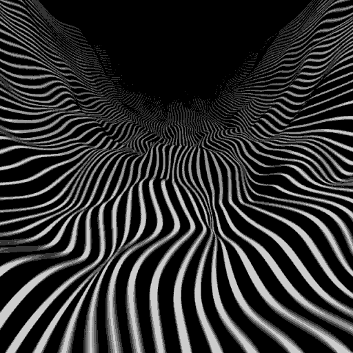

This processing gif tutorial is about the techniques involved in making this gif :

@raphaelameaume on Twitter was wondering about how it was made, and when looking at the code again I thought it would be interesting (although this gif is not really complex) to explain every aspect and general principles that could be used to make very different looking perfectly looping gifs. The code to make this gif is here in case you’re already wondering, but I’ll build it gradually in this tutorial.
I recommend reading two of my previous tutorials first :
This one about the motion blur/recording gif template from beesandbombs that I use.
That one about gif loops based on noise.
(includes probably many typos/mistakes that I may fix later)
A technique to get moving looping curves
This section is about the theoretical background behind the looping curves visible in the gif.
I’ll be using the Processing template from this tutorial (template by beesandbombs) and won’t show the code above the “//////////////” part (mostly about how to render frmaes with motion blur).
Let’s build some looping moving distortion gradually. A first step can be to make a periodic random function like this. (It doesn’t move so far)
Code :
int samplesPerFrame = 5;
int numFrames = 100;
float shutterAngle = .6;
boolean recording = true;
OpenSimplexNoise noise;
float SEED;
void setup(){
size(600,600,P2D);
result = new int[width*height][3];
noise = new OpenSimplexNoise();
SEED = random(10,1000);
}
int m = 1500;
float rad = 0.5;
float nperiod = 4.0;
void draw_(){
background(0);
noFill();
stroke(255);
strokeWeight(3);
beginShape();
for(int i=0;i<m;i++){
float p = 1.0*i/m;
float x = p*width;
float y = map((float)noise.eval(SEED + rad*cos(TWO_PI*(nperiod*p)),rad*sin(TWO_PI*(nperiod*p))),-1,1,0,height);
vertex(x,y);
}
endShape();
}
Let’s explain it. The idea is to take noise values in a circle doing nperiod turns of the circle to get the height values of the curve. The parameter “rad” controls the radius of the circle so how much things change within the period.
It’s not necessary for nperiod to be an integer except if you want the value at the end of the curve to match the first one (could be useful if you want to make a circle shaped thing for example).
SEED is a variable used to get different noise values by taking it at a random location. This technique important when you want different independant noise values.
Reminder : t goes from 0 to 1
So the key line is really
float y = map((float)noise.eval(SEED + rad*cos(TWO_PI*(nperiod*p)),rad*sin(TWO_PI*(nperiod*p))),-1,1,0,height);
Now let’s replace it by
float y = map((float)noise.eval(SEED + rad*cos(TWO_PI*(nperiod*p-t)),rad*sin(TWO_PI*(nperiod*p-t))),-1,1,0,height);
That’s like rotating the circle from which you take your values with an angle TWO_PI*t.
(Update : I added a last section of this tutorial that contains another explanation of this section, and it is probably much better to understand what’s going on and do more complex stuff).
Result :

If you use “+t” instead of “-t” it will move in the other direction.
Now let’s explain a trick that’s not used in the heart gif but that could be very useful. The idea is to keep this moving structure but make the values change with the change of x (or p in the code). To do this we can use 3D noise instead of 2D with the 3rd dimension used to give the change of x.
float y = map((float)noise.eval(SEED + rad*cos(TWO_PI*(nperiod*p-t)),rad*sin(TWO_PI*(nperiod*p-t)),1.0*p),-1,1,0,height);
Result :

We can increase the change with x :
float y = map((float)noise.eval(SEED + rad*cos(TWO_PI*(nperiod*p-t)),rad*sin(TWO_PI*(nperiod*p-t)),4.0*p),-1,1,0,height);
Result :
We now have looping moving stuff ! If you want the end (right side) to smoothly have the same value as the beginning (left side) you could use 4D noise instead, with another circle.
Let’s use the previous looping values to get horizontal and vertical displacement values on a simple curve (straight line at mid-height).
Code :
int m = 2000;
float rad = 1.5;
float nperiod = 4.0;
void draw_(){
background(0);
stroke(255,75);
for(int i=0;i<m;i++){
float p = 1.0*i/m;
float dx = 25*(float)noise.eval(SEED + rad*cos(TWO_PI*(nperiod*p-t)),rad*sin(TWO_PI*(nperiod*p-t)),4.0*p);
float dy = 25*(float)noise.eval(2*SEED + rad*cos(TWO_PI*(nperiod*p-t)),rad*sin(TWO_PI*(nperiod*p-t)),4.0*p);
point(p*width + dx,height/2 + dy);
}
}
Result :

What’s new? Dot by dot rendering style, with little opacity, I find that that way dots concentrate at some places and it creates more refined/smoke-like appearance compared to beginShape/endShape. I increased the radius of the circle and the number of dots m.
There are now two noise values gathered for each dot : one for the horizontal displacement dx and one for the vertical one dy. In order to get different noise values I use that technique that I use all the time : since the noise seed SEED is bigger than 10 (random(10,1000)), when taking 2*SEED it’ll always take noise values that are quite independant (somewhere else). Well… if not enough, you can just increase 10 in random(10,1000) :).
You can be more creative and have a non linear influence : instead of “4.0*p” use stuff like “pow(p,2.0)” More generally cos(theta1 – TWO_PI*t) and sin(theta2 – TWO_PI*t) will always produce stuff that loops well if theta1 and theta2 don’t depend on t. A clearer explanation is now at the end of the tutorial. A gif that uses the previous technique in a more sophisticated way is the following :

The code for the above gif is quite horrible but it’s here in case you’re curious.
But the heart gif just uses the moving periodic function even without the 3D noise variation.
Making the heart GIF
The shape of the heart gif is based on a parametric curve that I found by googling it.
float R = 150;
float xh(float p){
return R/15.0*16*pow(sin(p),3);
}
float yh(float p){
return R/15.0*(-13*cos(p) +5*cos(2*p) + 2*cos(3*p) + cos(4*p));
}
The ‚Äúh‚Äù come from ‚Äúheart‚Äù üôÇ
(I actually kind of normalized the equations quickly (division by 15) and multiplied them by R so that R kind of represents the “radius” of the shape in pixels.)
Those functions are TWO_PI periodic. We will now create random parts of the heart and apply the previous displacement on each part.
Let‚Äôs now define a class (that I call ‚ÄúThing‚Äù, which is a bad practice üôÇ ) of objects that will represent some parts of the heart.
Those parts have a bunch of random parameters : (Sorry for bad ideas of attributes names… I just want to keep the same notations as the initial code)
– random noise seed “seed”
– random location in the parametric equation “offset”
– random alpha factor and strokeweight, for varied appearance “ff” and “sw”
– random length of the part of the parametric curve “part”
– random scale “rf”
– random intensity of displacement “d”.
There could be more random parameters : here the parameters of the previous section will be always 2 for nperiod and 1.3 for the radius of the circle.
So we’ve got this class before defining the show method :
class Thing{
float seed = random(10,1000);
float offset = random(TWO_PI);
float ff = random(0.5,2.5);
float sw = random(0.8,1.8);
float part = 0.1+0.5*pow(random(1),2.0);
float rf = random(0.5,1.15);
float d = random(10,120);
void show(){
}
}
For the “part” attribute I didn’t use a uniform random distribution to get more short parts than long parts.
So let’s define the show method.
I chose to draw the curves with m dots :
int m = 500;
Here is a simplified show() method before the last one :
void show(){
for(int i=0;i<m;i++){
float p = 1.0*i/m;
float theta = offset + part*TWO_PI*i/m;
float rad = 1.3;
int per = 2;
float x = rf*xh(theta) + d*(float)noise.eval(seed + rad*cos(TWO_PI*(per*p-t)),rad*sin(TWO_PI*(per*p-t)));
float y = rf*yh(theta) + d*(float)noise.eval(2*seed + rad*cos(TWO_PI*(per*p-t)),rad*sin(TWO_PI*(per*p-t)));
strokeWeight(sw);
stroke(255,ff*18);
point(x,y);
}
}
The variable "p" is simply mapping i between 0 and 1, from there we get the parameter of the parametric equation "theta". The four following lines are simply looping distortion/displacement with the method of the previous section… adding it to the position obtained with the parametric equation.
Then we draw our dot. (One can notice that the displacement doesn't rotate with the parametric curve : that could be fixed using the normalized tangent and normal to the parametric curve.)
The rest of the code creates an array of 250 objects and shows them :
Here is the code, for some reason I can’t show it on wordpress.
You can get the global code so far to generate a gif here.
Result :
That looks quite different from the GIF we’re looking for, mostly because the displacement is huge. The heart gif we’re looking for just has two differences : the intensity of the displacement is multiplied py pow(p,3.0) (mostly very small, p is betweeen 0 and 1), and stroke alpha has a factor sin(PI*p) so that it appears and disappears gradually.
New code in show() :
float x = rf*xh(theta) + pow(p,3.0)*d*(float)noise.eval(seed + rad*cos(TWO_PI*(per*p-t)),rad*sin(TWO_PI*(per*p-t)));
float y = rf*yh(theta) + pow(p,3.0)*d*(float)noise.eval(2*seed + rad*cos(TWO_PI*(per*p-t)),rad*sin(TWO_PI*(per*p-t)));
strokeWeight(sw);
stroke(255,ff*18*sin(PI*p));
point(x,y);
Entire final code : link
Result :
You could now try other parametric curves !
That gif was made with the previous moving function trick (3D noise version), adding displacement from a spiral (with many curves drawn) :
Code here (not very readable it’s in case you’re curious about it)
Conclusion
I hope you found this helpful of interesting, don’t hesitate to send me your creations if this inspired you to make something. (I can share them here later)
Update : new explanation of the loop trick
I wasn’t satisfied of my previous explanations in the first section and found a way to deconstruct things to see things more clearly, which will help to make complex stuff more easily (at least it helped me see things more clearly). This section is just about propagating a periodic function.
Thanks to the circle in noise space we can define a 1-periodic function that way :
float radius = 1.0;
// 1-periodic function from a circle in noise
float F(float q){
return (float)noise.eval(SEED + radius*cos(TWO_PI*q),radius*sin(TWO_PI*q));
}
The code to draw the curve of the first section becomes
beginShape();
for(int i=0;i<m;i++){
float p = 1.0*i/m;
float x = p*width;
float y = map(F(offset(p)-t),-1,1,0,height);
vertex(x,y);
}
endShape();
The important thing here is the value "F(offset(p)-t)"
What's "offset(p)"? it is the delay at p : if t (going from 0 to 1) is in second, it will take offset(p) seconds for F(0) to reach p.
Here I used :
//offset or delay depending on a parameter
float offset(float p){
return 3.0*p;
}
Result :

Link to full code to generate it
Let’s try this offset :
//offset or delay depending on a parameter
float offset(float p){
return 5.0*pow(p,3.0);
}
Result :

This can be interpreted easily as the delay being very short at the beginning and then increasing a lot.
We can change the periodic function with the 3D noise technique from the first section of the tutorial (it’s not periodic anymore) :
float F(float q,float p){
return (float)noise.eval(SEED + radius*cos(TWO_PI*q),radius*sin(TWO_PI*q),2.0*p);
}
float y = map(F(offset(p)-t,p),-1,1,0,height);
Result :

This is related to the previous tutorial about gifs with stripes
Those curves are ugly but that is a general trick to get moving stuff/values that loop perfectly.
I hope things are clearer now… I may continue this tutorial to explain how to use this to make 2D/3D stuff (for example to get a moving looping surface height).
Now maybe you can have an idea of how this gif loops üôÇ !